If you’re looking for more retro gaming than the NES games that come free with your Nintendo Switch Online subscription, you might be interested in playing some Japanese Famicom games. Turns out you can do this without any additional cost. I’m not suggesting you load an emulator on your Switch, though that seems like an option these days. It’s not totally straightforward, but it’s not too challenging either. And it definitely won’t leave your Switch in a state where you’re afraid to let it update.
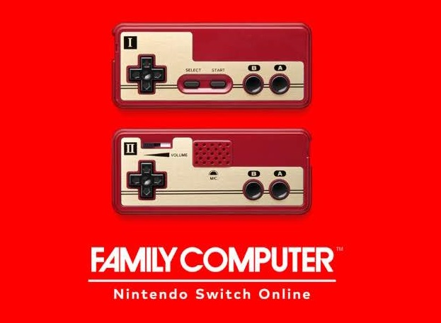
One warning, though. The ads on your Switch home screen now have the ability to show up in either English or Japanese.
Why would you want the Famicom app?
You might just want it because you can. (It’s me!) If you were a Nintendo Switch Online subscriber in Japan, the free retro gaming app is what you would get by default with your subscription is the Famicom app. (And you’d be looking for the reverse instructions to play NES games.) It has all the appropriate cover art images, some of which are just awesome. So, maybe the cover art could sell you on it.
There were also several games that were slightly different when released outside of Japan, whether different difficulty or different parts of games. It also has a few games that aren’t available in the US. Joy Mech Fight is one such game, and supposedly the Mario 3 release in Japan was harder than what hit the US and Europe.
With just a tiny bit of work, you can try out all the Famicom games on your non-Japan Switch.
Get the Famicom app
While there are instructions out there allowing you to get the app downloaded to your Switch entirely from your computer, they require using third-party VPN software that will allow you to bounce your web requests through Japan before they get to Nintendo. I’m not a fan of installing random VPN software, and I’m too lazy to do it in a slightly safer way. (I’m nerdy enough that I would set up a virtual machine with a clean install of Windows just to avoid any potential danger from unknown VPN software installs.)
Fortunately, there’s an alternative. If you use a Nintendo account with its location set to Japan on your Switch, you can download the Famicom Nintendo Switch Online app.
Create and use a Japanese Nintendo Account
- Create a Nintendo account with a different email than your account with a Nintendo Switch Online subscription, setting the location set to Japan.
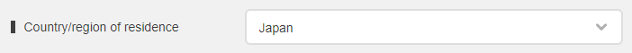
You can set the rest of the account to whatever you want. Most likely, you’ll rarely use this account again. Just make sure you save the new password in LastPass or wherever; you’ll need it in the next part.
- Now, on your Switch console, go to the System Settings app (the gear [“sun”] icon on the home screen).
- Open up the Users tab on the left and scroll to the bottom of the user list and click Add User.
- Set your console user’s icon and nickname to whatever you want.
- When prompted, link your new device account to a Nintendo Account using the email and password you used on the Nintendo website. (You saved that password, right?)
- Open the Nintendo eShop app from the home screen (the bag [“suitcase”] icon on the home screen).
- When asked which user is using the eShop, select your new Japan-based account.
If your Switch is set to English, you’ll be prompted that the Japanese eShop can’t be shown in your system language, but you can just continue. Just know, your going to be using the eShop in Japanese for the next steps.
- For this first launch, you’ll also be asked if you want to enter the password for this new account every time you launch the eShop. If you don’t want to enter it every time, check the checkbox above the button right button.
- Lastly, click the button to log in with your new Nintendo Account password. (Still need that password!).
Download the app from the eShop
Here’s a video showing the rest of the eShop process, but follow along with the directions if you’d rather work through things at your own pace. The hardest part for someone like me, who can’t read more than a couple katakana characters, was translating the text in the Japanese eShop. Fortunately, the Google Translate app did all the heavy lifting for me there.
- On the left-hand side, select the search section on the left (with the magnifying glass).
- The search page has a typical search field but also has several category/sorting buttons. For this adventure, click the top-right button, which translates roughly to “price range”.
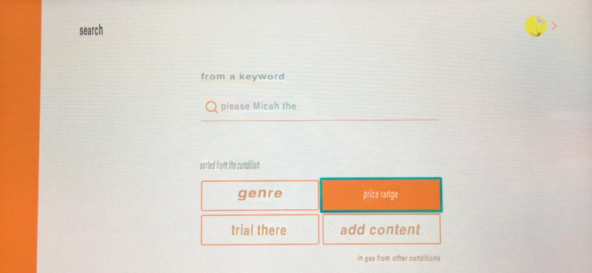
- Within the price range list, scroll all the way down to the bottom section, which has a header that translates roughly to “free download”. Move the cursor over to the little link below the row of apps that translates to “see all” and click that link.
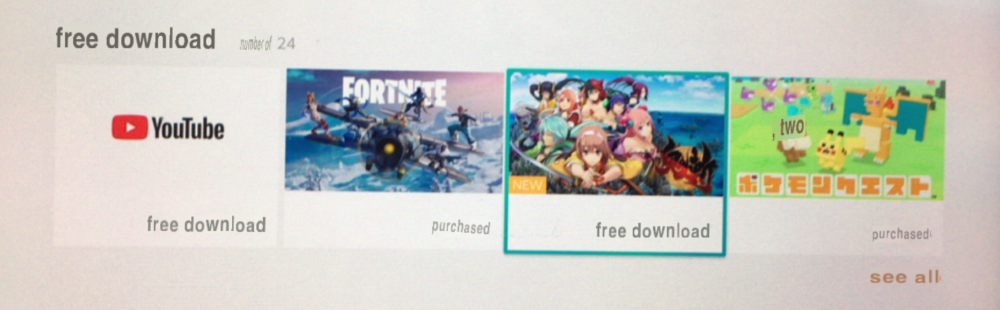
- In the right-hand app list, scroll down until you see a red icon with two Famicom controllers on it. (At the time of writing this, it was the very last game in the list.) The title will translate to “Family Computer [Nintendo Switch Online]” and the price should translate to “free download”. Click that app to see its details.
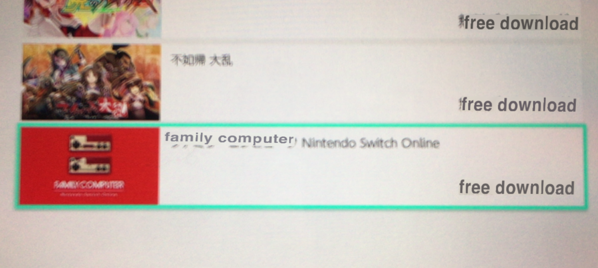
- On the Famicom app details, click the right-hand button; it should have a button label that translates to “free download”.
- On the checkout order details screen, click the bottom right button that translates to “free”.
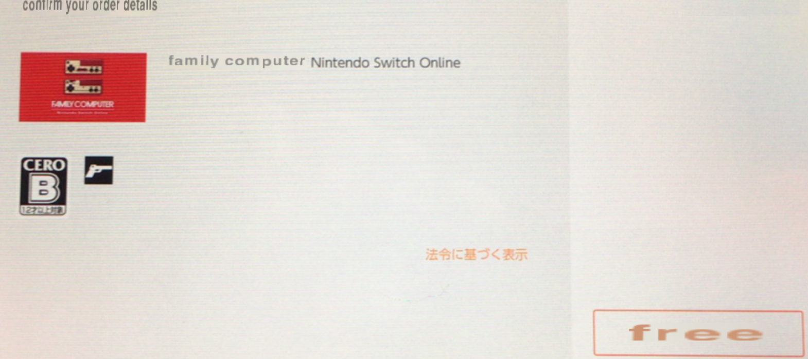
- Lastly, you’ll be presented with the order confirmation “thank you” page. Click the left button of the “thank you” page that translates to “ends”. (The other button is to continue shopping in the Japanese eShop.)
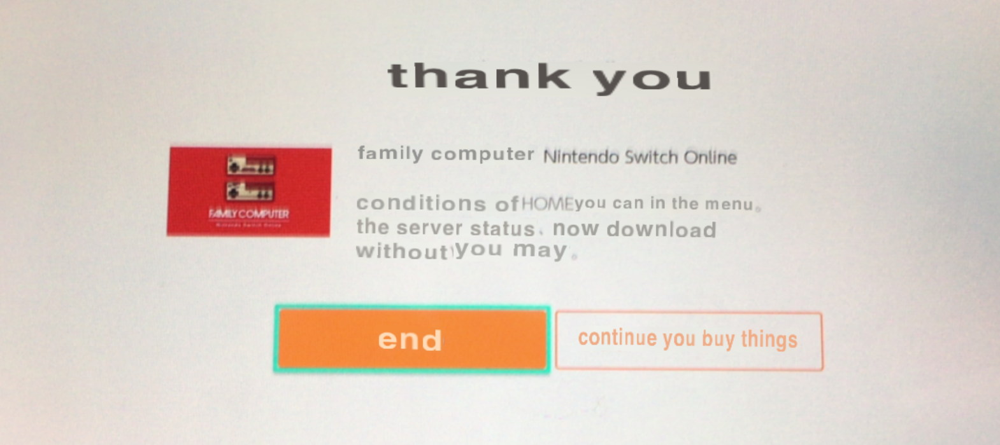
- You can hit the Home button to return to the home screen or hit the B button repeatedly to exit out of the eShop. (If you exit out, you’ll need to confirm on a dialog with the right-side button that translates to “ends”.)
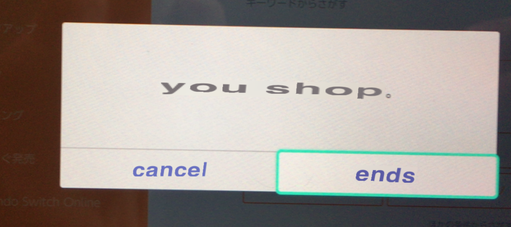
If you have parental controls set up on your Switch, you might even get notified of the new app install.
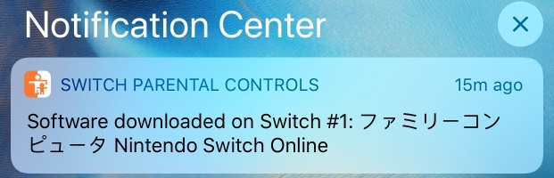
- Now, launch the newly-installed Famicom app from the home screen. When asked who is playing, use your normal Switch account.
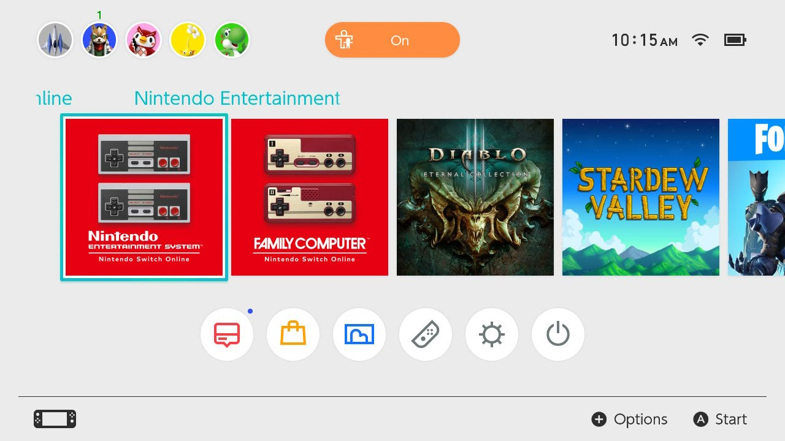
It will verify that you have a license to play the game, which you get by having a Switch Online subscription, and let you get to the fun.
This is where you definitely wanted to pick your normal Switch account. If you pick your new Japan-based account, it will likely fail to launch and ask you to subscribe to Nintendo Switch Online.
Launch the Famicom games app
Several of the Famicom games won’t be hard to figure out. In fact, some of them will display different text if run on a system with its language set to English. If you have too much trouble, though, that’s where the Google Translate app can help you out.
Just like the NES app, you press ZL+ZR to bring up the options. The options appear to be identical to the NES app, just displayed in Japanese. The first option returns you to the current game, the second option is Load Suspend Point, then Create Suspend Point, Reset Game, and To Game Selection is the last option.
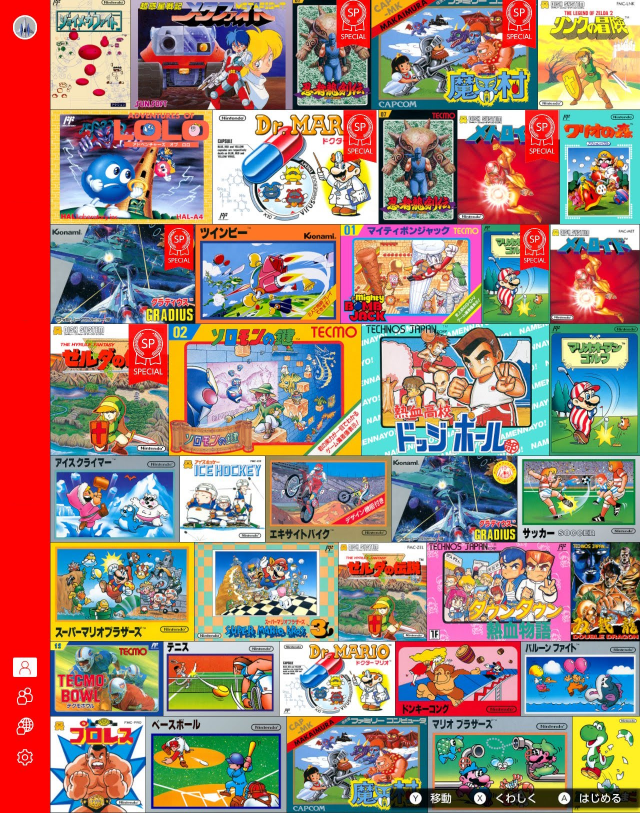